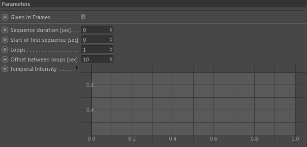
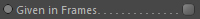
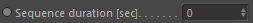
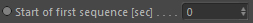
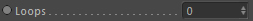
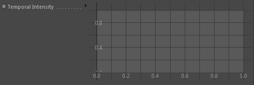

Parameters
Parameters

Given in Frames

All settings are given in frames instead of seconds if you activate this checkbox.
Sequence duration [sec]

Defines the length of the time sequence.
Start of first sequence [sec]

Defines the starting point in time of the sequence (the first sequence if it is looped).
Loops

The time sequence defined by 'Sequence duration' and 'Start of first sequence' can be looped. This defines how many times.
A value of 0 means that the sequence is not looped but only evaluated once.
Offset between sequences [sec]

Only used if 'Loops' is > 0. Defines the offset between two looped sequences.
Example in an Emitter:
Loops = 1, Sequence duration = 10F, Start = 15F, Offset = 12F.
With the above settings the emitter will operate as follows:
1. start emitting at frame 15.
2. It will emit for 10 frames (so until frame 25).
3. Then we have a pause lasting 12 frames (the offset).
4. At frame 37 the sequence loops and jumps back to step 2.
This is done 'Loops' times before the emitter ceases operating.
With the above settings the emitter will operate as follows:
1. start emitting at frame 15.
2. It will emit for 10 frames (so until frame 25).
3. Then we have a pause lasting 12 frames (the offset).
4. At frame 37 the sequence loops and jumps back to step 2.
This is done 'Loops' times before the emitter ceases operating.
Temporal intensity

Here you can control the intensity of the sequence via a spline graph.
For example when the emitter asks the duration node internally if the sequence is currently active, it will return a full intensity if it is and if not it will return zero.
With the spline graph you can alter this intensity temporally. The spline graph ranges from the start of the sequence until the end of it (so this is per loop).